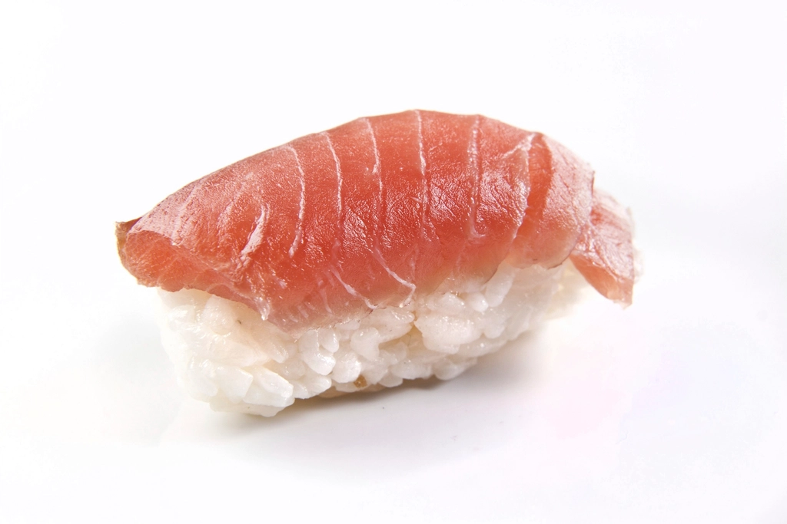
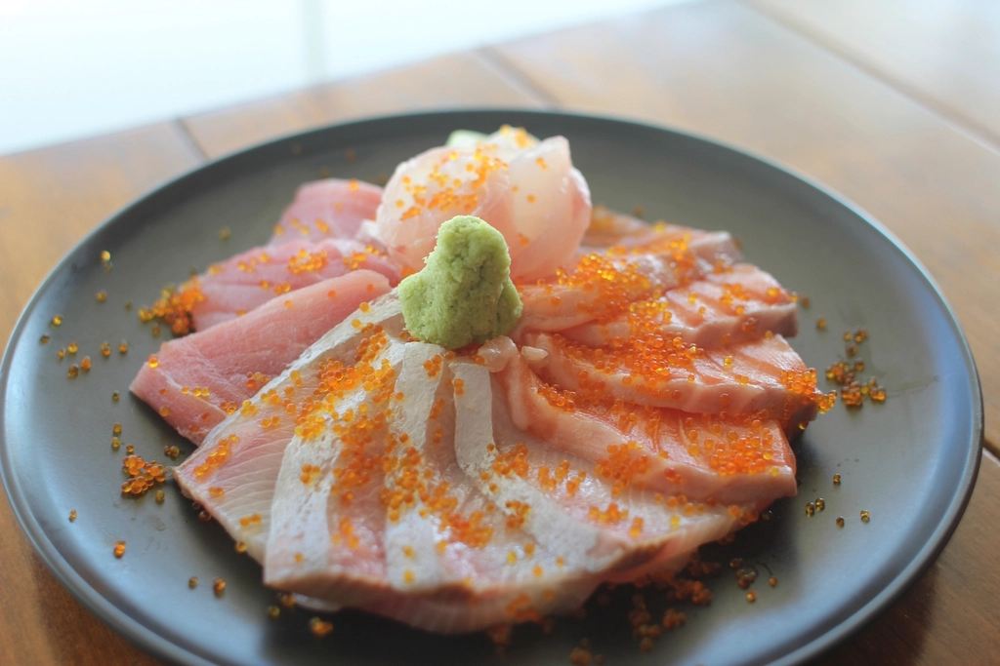
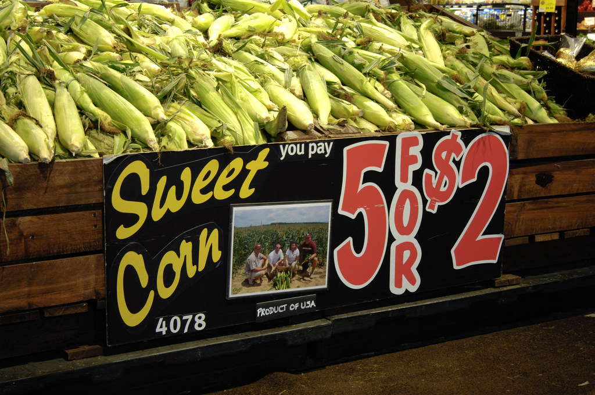
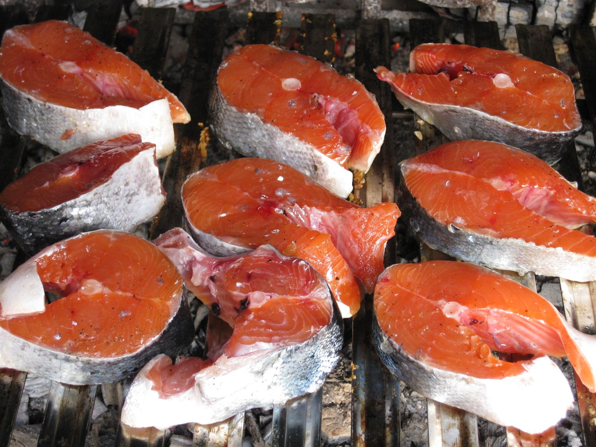
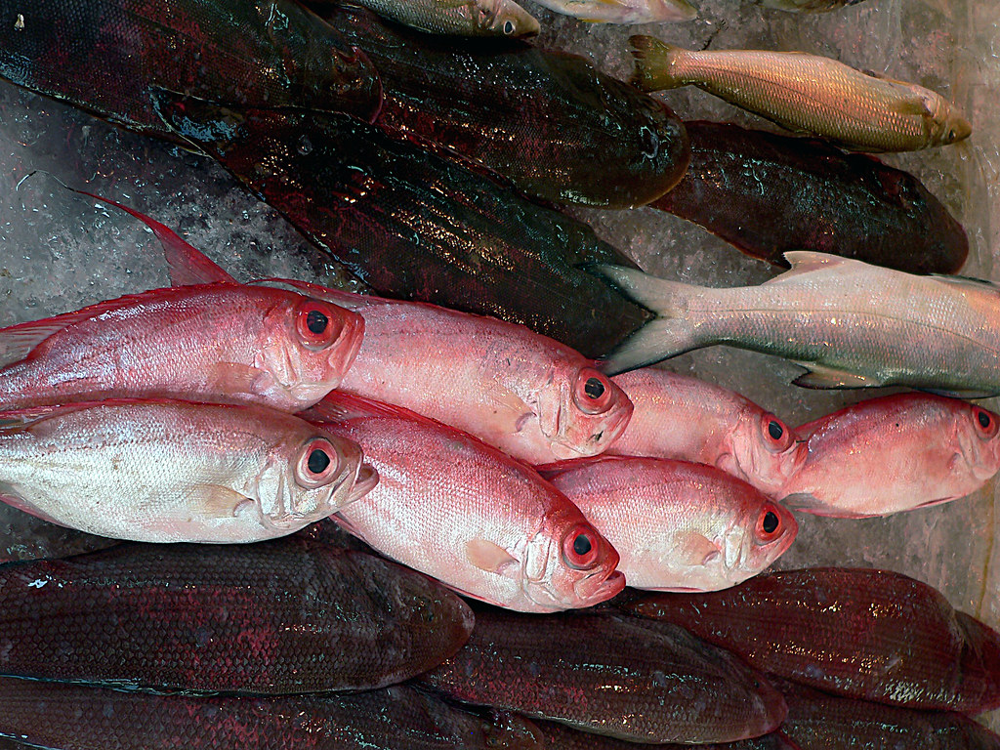
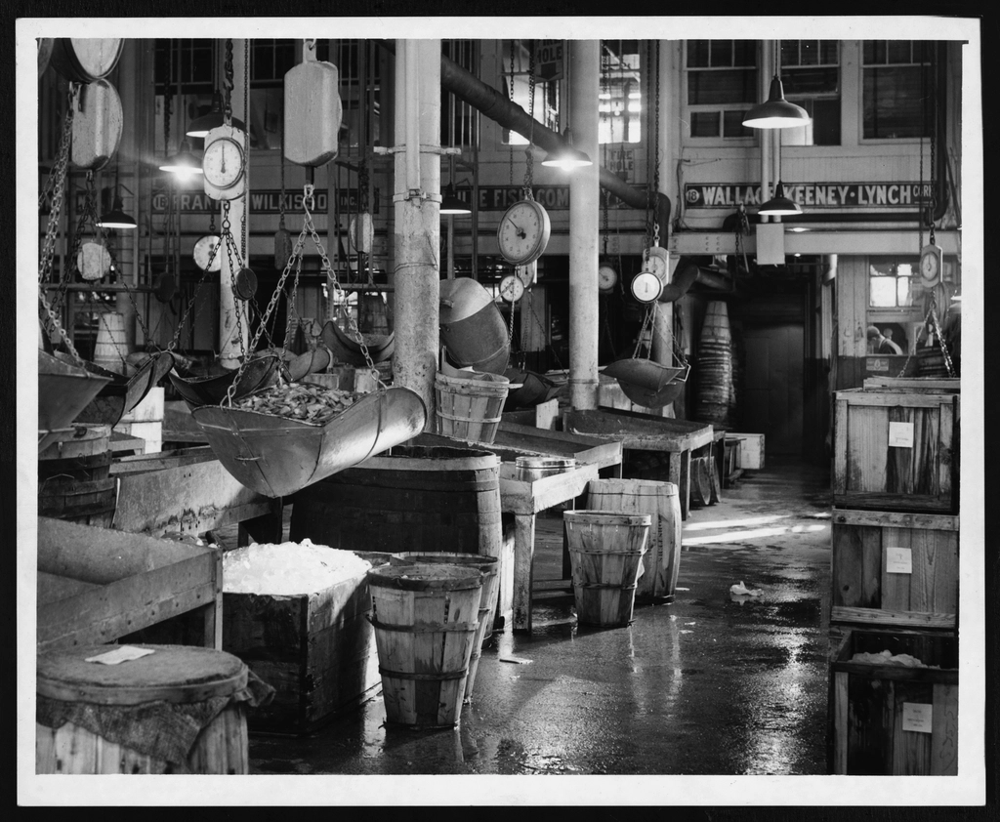

PHOTO SAMPLE鮮度と厚みへのこだわり
臭みのない鮮度、ひと切れごとの食べ応え。目利きが仕入れた魚を、厚みのある切り方でお届けします。マグロは切り口を見れば違いがわかる——そう言っていただけるのが、久下鮮魚店の刺身です。
茨城県取手市 鮮魚店
取手の台所、久下鮮魚店。
目利きが選ぶ、今日いちばんの魚。取手の街で長く愛されてきた鮮魚店です。
営業時間・定休日：【営業時間・定休日はご確認のうえ記載します】

PHOTO SAMPLETODAY'S CATCH
市場から届いたばかりの魚が、その日その日で店先に並びます。マグロ、金目鯛、石鯛、キンキ、鮭——目利きが選んだ魚だけを、久下鮮魚店の木箱に。
※入荷状況は時期・時間帯により異なります。金目鯛・石鯛・キンキなどは、タイミングにより入荷しない日もございます。
※価格は時価となります。確定した価格は店頭またはお電話にてご確認ください。

PHOTO SAMPLE臭みのない鮮度、ひと切れごとの食べ応え。目利きが仕入れた魚を、厚みのある切り方でお届けします。マグロは切り口を見れば違いがわかる——そう言っていただけるのが、久下鮮魚店の刺身です。
金目鯛、石鯛、キンキ——市場のその日の入荷次第で、店先に並ぶ特別な魚があります。「今日は何がある？」その日ならではの一尾との出会いを、ぜひお電話でお確かめください。
※価格は店頭にてご確認ください。
サクサクの衣に、甘みの効いたたまねぎ。生姜醤油でどうぞ——食卓の箸休めに、お酒のお供に、久下鮮魚店のもう一つの名物です。
※価格は店頭にてご確認ください。
店主が仕込む、久下鮮魚店の自家製イカの塩辛。ご飯にもお酒にも合うと評判で、売り切れてしまうこともございます。気になる方はお早めに、またはお電話でご確認ください。
※価格は店頭にてご確認ください。
市場から届いたその日の魚を、木箱に並べてご紹介します。迷ったら、まずはこの5品から。

PHOTO SAMPLE数種の魚を彩りよく盛り合わせた、久下鮮魚店の定番。
参考価格：3,000円程度
※ご来店されたお客様の口コミに基づく参考情報です。店舗の確定価格ではありませんので、詳しくは店頭・お電話にてご確認ください。
厚切りでこそ味わえる、脂ののった食べ応え。
価格：【価格はご確認のうえ記載します】（時価）

PHOTO SAMPLE大きく食べ応えのある切り身を、そのままでも焼いても。
価格：【価格はご確認のうえ記載します】（時価）
生姜醤油との相性抜群、久下鮮魚店の名物揚げ物。
価格：【価格はご確認のうえ記載します】
店主手作り、人気につき売り切れることがございます。
価格：【価格はご確認のうえ記載します】
今日の商品ラインナップは、お電話でご確認いただけます。
電話でお問い合わせ 【電話番号はご確認のうえ記載します】
PHOTO SAMPLEお刺身をお渡しするときは、氷を惜しまず多めに。少しでも新鮮な状態でご自宅までお届けしたい——その気持ちが、久下鮮魚店の接客です。
「親切に氷を余分に入れてくれた」というお声もいただく、あたたかい店内でお待ちしております。
お刺身の鮮度は最高で、外れがありません。乾物も充実していて、お盆や年末年始の食卓に重宝しています。
マグロが段違いに美味しい人気店。週末は早めに行かないと売り切れてしまうことも。金目鯛や石鯛など、珍しい魚に出会えることもあります。
マグロは厚みがあって食べ応え抜群。鮭も大きくて美味しい。自家製のイカの塩辛も人気です。
美味しいお刺身が並び、まぐろの中トロがおすすめです。
刺身が新鮮で臭みがなく、ひと切れが大きい。お刺身に氷を余分に入れてくれるなど、店員さんがとても親切でした。
茨城県取手市【住所（番地）はご確認のうえ記載します】
取手の街なかで、長くご商売をさせていただいております。お車でお越しの際は、下記の点にご注意のうえお越しください。
営業時間・定休日：【営業時間・定休日はご確認のうえ記載します】
金目鯛や石鯛など旬の魚が並ぶ日もあれば、人気の商品が早めに売り切れてしまう日もあります。確実にお求めいただくために、まずはお電話でご確認ください。
取り置き・大量注文・法事のご相談など、お電話しづらいご用件はお問い合わせフォームからもご連絡いただけます（フォームは準備中です。現在はお電話にてお問い合わせください）。
PHOTO SAMPLE（フリー素材によるイメージ写真）

SAMPLE 市場・木箱のイメージ